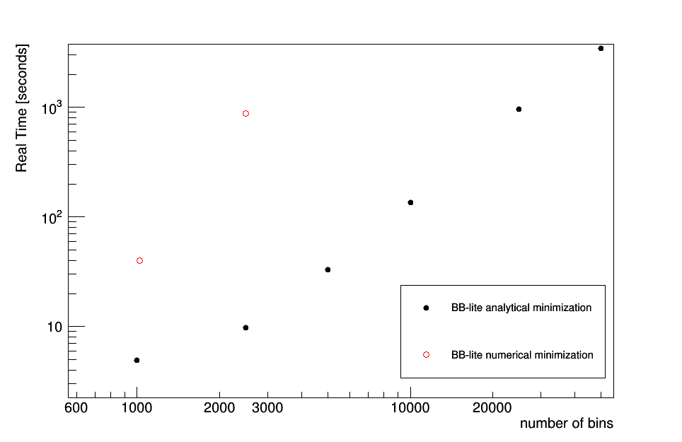

Automatic statistical uncertainties
Introduction
The text2workspace.py script is able to produce a type of workspace, using a set of new histogram classes, in which bin-wise statistical uncertainties are added automatically. This can be built for shape-based datacards where the inputs are in TH1 format. Datacards that use RooDataHists are not supported. The bin errrors (i.e. values returned by TH1::GetBinError) are used to model the uncertainties.
By default the script will attempt to assign a single nuisance parameter to scale the sum of the process yields in each bin, constrained by the total uncertainty, instead of requiring separate parameters, one per process. This is sometimes referred to as the Barlow-Beeston-lite approach, and is useful as it minimises the number of parameters required in the maximum likelihood fit. A useful description of this approach may be found in section 5 of this report.
Usage instructions
The following line should be added at the bottom of the datacard, underneath the systematics, to produce a new-style workspace and optionally enable the automatic bin-wise uncertainties:
[channel] autoMCStats [threshold] [include-signal = 0] [hist-mode = 1]
The first string channel should give the name of the channels (bins) in the datacard for which the new histogram classes should be used. The wildcard * is supported for selecting multiple channels in one go. The value of threshold should be set to a value greater than or equal to zero to enable the creation of automatic bin-wise uncertainties, or -1 to use the new histogram classes without these uncertainties. A positive value sets the threshold on the effective number of unweighted events above which the uncertainty will be modeled with the Barlow-Beeston-lite approach described above. Below the threshold an individual uncertainty per-process will be created. The algorithm is described in more detail below.
The last two settings are optional. The first of these, include-signal has a default value of 0 but can be set to 1 as an alternative. By default, the total nominal yield and uncertainty used to test the threshold excludes signal processes. The reason for this is that typically the initial signal normalization is arbitrary, and could unduly lead to a bin being considered well-populated despite poorly populated background templates. Setting this flag will include the signal processes in the uncertainty analysis. Note that this option only affects the logic for creating a single Barlow-Beeston-lite parameter vs. separate per-process parameters - the uncertainties on all signal processes are always included in the actual model! The second flag changes the way the normalization effect of shape-altering uncertainties is handled. In the default mode (1) the normalization is handled separately from the shape morphing via a an asymmetric log-normal term. This is identical to how Combine has always handled shape morphing. When set to 2, the normalization will be adjusted in the shape morphing directly. Unless there is a strong motivation we encourage users to leave this on the default setting.
Description of the algorithm
When threshold is set to a number of effective unweighted events greater than or equal to zero, denoted \(n^{\text{threshold}}\), the following algorithm is applied to each bin:
- Sum the yields \(n_{i}\) and uncertainties \(e_{i}\) of each background process \(i\) in the bin. Note that the \(n_i\) and \(e_i\) include the nominal effect of any scaling parameters that have been set in the datacard, for example
rateParams. \(n_{\text{tot}} = \sum_{i\,\in\,\text{bkg}}n_i\), \(e_{\text{tot}} = \sqrt{\sum_{i\,\in\,\text{bkg}}e_i^{2}}\) - If \(e_{\text{tot}} = 0\), the bin is skipped and no parameters are created. If this is the case, it is a good idea to check why there is no uncertainty in the background prediction in this bin!
- The effective number of unweighted events is defined as \(n_{\text{tot}}^{\text{eff}} = n_{\text{tot}}^{2} / e_{\text{tot}}^{2}\), rounded to the nearest integer.
- If \(n_{\text{tot}}^{\text{eff}} \leq n^{\text{threshold}}\): separate uncertainties will be created for each process. Processes where \(e_{i} = 0\) are skipped. If the number of effective events for a given process is lower than \(n^{\text{threshold}}\) a Poisson-constrained parameter will be created. Otherwise a Gaussian-constrained parameter is used.
- If \(n_{\text{tot}}^{\text{eff}} \gt n^{\text{threshold}}\): A single Gaussian-constrained Barlow-Beeston-lite parameter is created that will scale the total yield in the bin.
- Note that the values of \(e_{i}\), and therefore \(e_{tot}\), will be updated automatically in the model whenever the process normalizations change.
- A Gaussian-constrained parameter \(\nu\) has a nominal value of zero and scales the yield as \(n_{\text{tot}} + \nu \cdot e_{\text{tot}}\). The Poisson-constrained parameters are expressed as a yield multiplier with nominal value one: \(n_{\text{tot}} \cdot \nu\).
The output from text2workspace.py will give details on how each bin has been treated by this algorithm, for example:
Show example output
============================================================
Analysing bin errors for: prop_binhtt_et_6_7TeV
Poisson cut-off: 10
Processes excluded for sums: ZH qqH WH ggH
============================================================
Bin Contents Error Notes
0 0.000000 0.000000 total sum
0 0.000000 0.000000 excluding marked processes
=> Error is zero, ignore
------------------------------------------------------------
1 0.120983 0.035333 total sum
1 0.120983 0.035333 excluding marked processes
1 12.000000 3.464102 Unweighted events, alpha=0.010082
=> Total parameter prop_binhtt_et_6_7TeV_bin1[0.00,-7.00,7.00] to be gaussian constrained
------------------------------------------------------------
2 0.472198 0.232096 total sum
2 0.472198 0.232096 excluding marked processes
2 4.000000 2.000000 Unweighted events, alpha=0.118049
=> Number of weighted events is below poisson threshold
ZH 0.000000 0.000000
=> Error is zero, ignore
----------------------------------------------------------
W 0.050606 0.029220
3.000000 1.732051 Unweighted events, alpha=0.016869
=> Product of prop_binhtt_et_6_7TeV_bin2_W[1.00,0.00,12.15] and const [3] to be poisson constrained
----------------------------------------------------------
ZJ 0.142444 0.140865
1.000000 1.000000 Unweighted events, alpha=0.142444
=> Product of prop_binhtt_et_6_7TeV_bin2_ZJ[1.00,0.00,30.85] and const [1] to be poisson constrained
----------------------------------------------------------
Analytic minimisation
One significant advantage of the Barlow-Beeston-lite approach is that the maximum likelihood estimate of each nuisance parameter has a simple analytic form that depends only on \(n_{\text{tot}}\), \(e_{\text{tot}}\) and the observed number of data events in the relevant bin. Therefore when minimising the negative log-likelihood of the whole model it is possible to remove these parameters from the fit and set them to their best-fit values automatically. For models with large numbers of bins this can reduce the fit time and increase the fit stability. The analytic minimisation is enabled by default starting in combine v8.2.0, you can disable it by adding the option --X-rtd MINIMIZER_no_analytic when running Combine.
The figure below shows a performance comparison of the analytical minimisation versus the number of bins in the likelihood function. The real time (in sections) for a typical minimisation of a binned likelihood is shown as a function of the number of bins when invoking the analytic minimisation of the nuisance parameters versus the default numerical approach.
Show Comparison

Technical details
Up until recently text2workspace.py would only construct the PDF for each channel using a RooAddPdf, i.e. each component process is represented by a separate PDF and normalization coefficient. However, in order to model bin-wise statistical uncertainties, the alternative RooRealSumPdf can be more useful, as each process is represented by a RooFit function object instead of a PDF, and we can vary the bin yields directly. As such, a new RooFit histogram class CMSHistFunc is introduced, which offers the same vertical template morphing algorithms offered by the current default histogram PDF, FastVerticalInterpHistPdf2. Accompanying this is the CMSHistErrorPropagator class. This evaluates a sum of CMSHistFunc objects, each multiplied by a coefficient. It is also able to scale the summed yield of each bin to account for bin-wise statistical uncertainty nuisance parameters.
Warning
One disadvantage of this new approach comes when evaluating the expectation for individual processes, for example when using the --saveShapes option in the FitDiagnostics mode of Combine. The Barlow-Beeston-lite parameters scale the sum of the process yields directly, so extra work is needed to distribute this total scaling back to each individual process. To achieve this, an additional class CMSHistFuncWrapper has been created that, given a particular CMSHistFunc, the CMSHistErrorPropagator will distribute an appropriate fraction of the total yield shift to each bin. As a consequence of the extra computation needed to distribute the yield shifts in this way, the evaluation of individual process shapes in --saveShapes can take longer then previously.